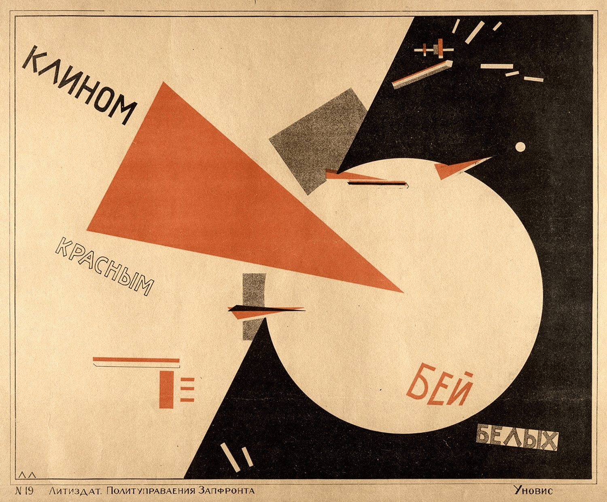

A red triangle runs in from the left and lodges in a white disc; a coal-black diagonal compresses it from the right. The wedge penetrates. The circle resists. Shape alone stages the conflict.
Warm analogy meets value contrast: paper steadies, coal weighs, the disc shines, and scarce high-chroma vermilion performs the action. There is no depicted light source, yet overlap creates depth.
Few ink colors, hard silhouettes, and geometry make the poster legible at distance. Grain, aged paper, and slight registration texture preserve the friction of print.
Fact: Architecturally trained El Lissitzky began teaching in Vitebsk in late 1919 and redirected Suprematist abstract planes into posters, books, and typography. This work belongs to the propaganda context of the Russian Civil War.
Formal admiration is not political endorsement. Context and symbolism are sourced facts; the line above is Daily Art's analysis.
El Lissitzky, Beat the Whites with the Red Wedge, 1919 (some records date impressions to 1920), color lithograph. Image: Wikimedia Commons, 1500 × 1242, marked Public Domain on the file page. Object records: Art Platform Japan / Utsunomiya Museum of Art and Art Institute of Chicago archive. Image rights remain with the artist and applicable rights holders; verify local reuse rules. Analysis by Daily Art.